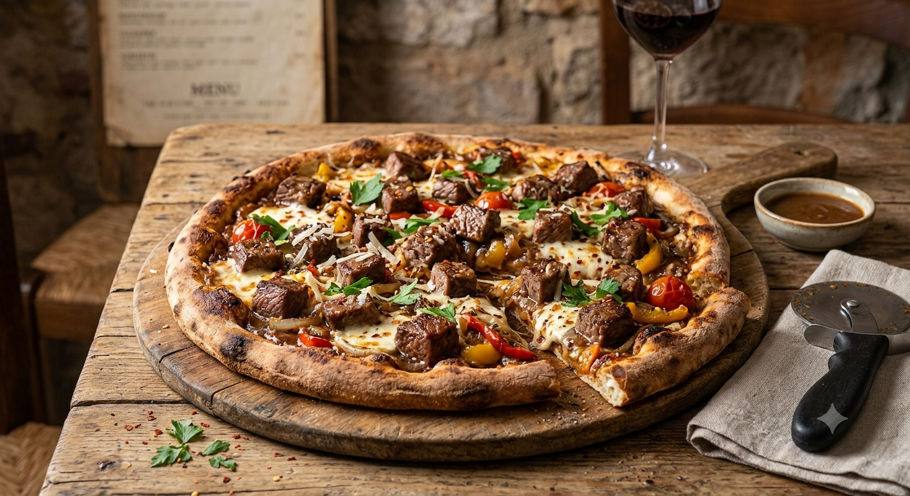
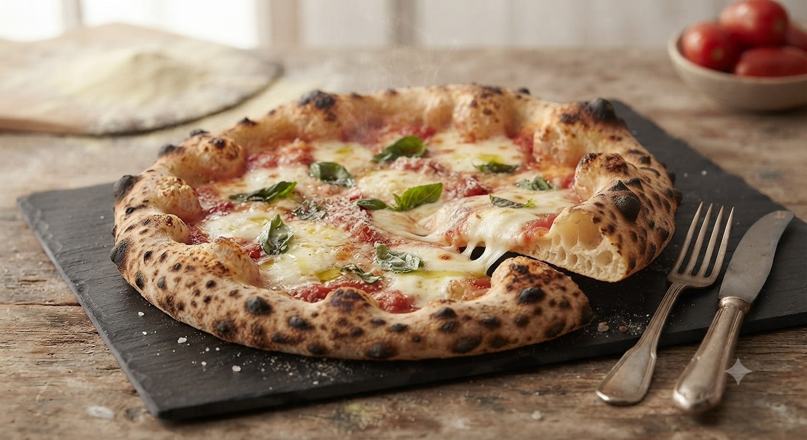
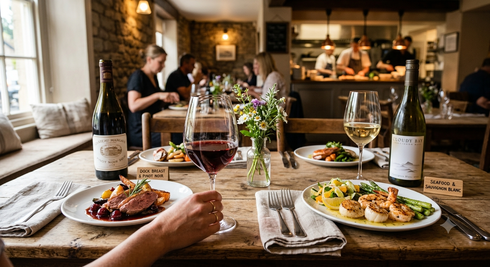

仙台・本町の隠れ家イタリアン
全粒粉100%のもちもち生地と、
心と体に優しいナポリピッツァ

通常の小麦より食物繊維が豊富な全粒粉を独自ブレンド。もちもちした食感と香ばしさがクセになります。

ピザ生地、パスタソース、ドルチェ。出来合いのものは一切使わず、店内で手間暇かけて仕上げるのが私たちの誇り。

宮城産ワインや厳選したナチュール。料理の味を引き立てる一杯をご提案。夜はムーディーな照明で大人の隠れ家に。
「美ッツァという全粒粉のピザ. 軽くてあっという間にペロリ. 追加しちゃいました. 全然重くないイタリアン♪」
30代女性 / Instagramより
「退店時には見送ってくれたり、接客の丁寧さも感じとれるお店です. 一人で行ってもカウンターで快適に過ごせました.」
40代男性 / Googleクチコミより
所在地
〒980-0014 宮城県仙台市青葉区本梅2丁目12−25 T102
地下鉄広瀬通駅 徒歩5分 / 錦町公園すぐ隣
営業時間・定休日
ランチ・ディナー営業 / 定休日：火曜日
お電話
022-290-2210Designer's Note:
錦町公園のすぐ隣、隠れ家的な雰囲気がある2号店です. お車でお越しの方は近隣のコインパーキングをご利用ください. 貸切やお祝いの相談も承っております.